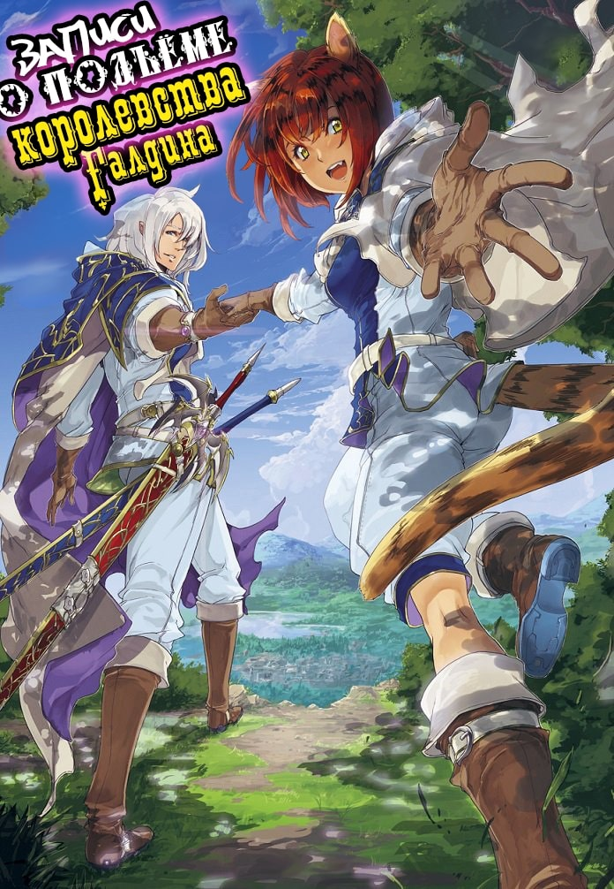

Записи о Подъёме Королевства Галдины

Японское наименование: ガルディナ王国興国記
Английское наименование: The Records of Kingdom of Galdina's Rise to Power
Автор: Сакураги Кайто
Издательство: Syosetu
Вид: Веб-новел
Статус: Завершён
Перевод с японского: Mushu Sibiriak
Редактор: Triniti
Эдит Иллюстраций: -
Английское наименование: The Records of Kingdom of Galdina's Rise to Power
Автор: Сакураги Кайто
Издательство: Syosetu
Вид: Веб-новел
Статус: Завершён
Перевод с японского: Mushu Sibiriak
Редактор: Triniti
Эдит Иллюстраций: -
Аннотация:
Амаги Шигехиса, сдававший вступительные экзамены своего университета, неожиданно переместился в этот мир без какого-либо предупреждения. Оказавшись в мире меча и магии, он стал получеловеком расы Драгунир, что по праву считались самыми сильными.
После нескольких дней прибывания в этом мире он встретился со всей его жестокостью. Все, кто хоть немного отличался от людей, сразу попадали под гонения. Полулюди, эльфы, гномы и другие расы были рабами. Познакомившись с некоторыми из них, Амаги принял решение построить первый город, где все смогут быть свободными.
"Своими силами я создам город, где все смогут быть свободными и не знать оков рабства!"